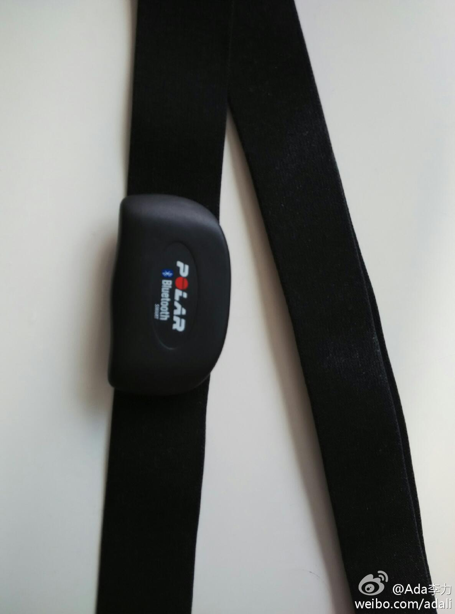
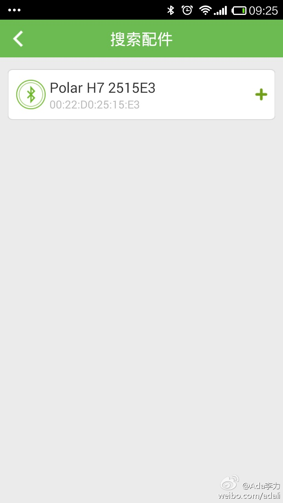
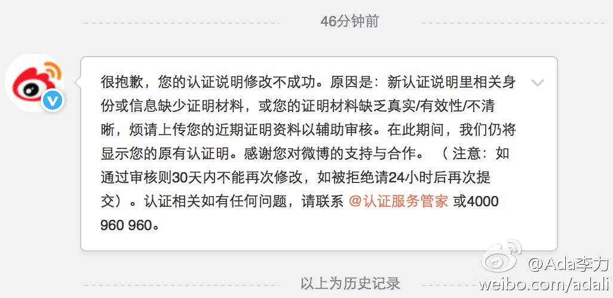

@咕咚运动 能识别Polar蓝牙心率带，就是连不上。试过几个支持外设的App, Endomondc, Runtastic, Sports Tracker, 只有Endomondc能识别，也是连不上。不知道是跟手机有关，还是跟蓝牙的PIN码有关。 
为了改个微博上的认证信息，跟新浪提交过三次不同的资料了，每次回复都是官方套话，到底资料哪里不清晰，还是不知道。今天忍无可忍，打了400电话问问，一大串选择之后人工接听，仍旧是说要把我的意见转给审核组，而且她也看不到我的审核资料。 
这种不直接解决问题，只是传达用户意见的客服，我以为只有在传统行业的公司里多见。新浪这种互联网公司也如此，真长见识了。－ 只做传声筒的客服，完全是可以由机器代替的。@Ada李力:为了改个微博上的认证信息，跟新浪提交过三次不同的资料了，每次回复都是官方套话，到底资料哪里不清晰，还是不知道。今天忍无可忍，打了400电话问问，一大串选择之后人工接听，仍旧是说要把我的意见转给审核组，而且她也看不到我的审核资料。
民营公司搞身份认证这些事儿，是不是给自己找麻烦？我在想其它网站的用户等级和权限问题，是不是只有中国喜欢搞这种所谓的官方认证吧，就是你的身份你自己说了不算。//@tinyfool: 去掉v就可以随便改了，哈哈@Ada李力:为了改个微博上的认证信息，跟新浪提交过三次不同的资料了，每次回复都是官方套话，到底资料哪里不清晰，还是不知道。今天忍无可忍，打了400电话问问，一大串选择之后人工接听，仍旧是说要把我的意见转给审核组，而且她也看不到我的审核资料。
为了查公司账号上的账目，花了一个上午和半个下午，干了这么几件事情：Macbook上安装WindowsXP；安装招商银行UBank；自己折腾未果；打了两次招行客服电话得到指点；两个管理员账号注册后相互授权；查账。
查账的原因是申请微信服务号认证，公司认证需要很多信息，包括往公司账号上打些钱，然后电话回访认证钱数。－ 这种验证方式是支付宝最开始用的吧。@Ada李力:为了查公司账号上的账目，花了一个上午和半个下午，干了这么几件事情：Macbook上安装WindowsXP；安装招商银行UBank；自己折腾未果；打了两次招行客服电话得到指点；两个管理员账号注册后相互授权；查账。
同一天，经历了新浪和腾讯两家公司的认证。腾讯做法标准更客观，给予政府颁发的证件和银行账户来做认证，而新浪的认证，要么是由公司人事提供认证材料，要么是有好友转发证明，中间可能存在的变数太多了。－ 这也是新浪商业上不怎么成功的原因吧。